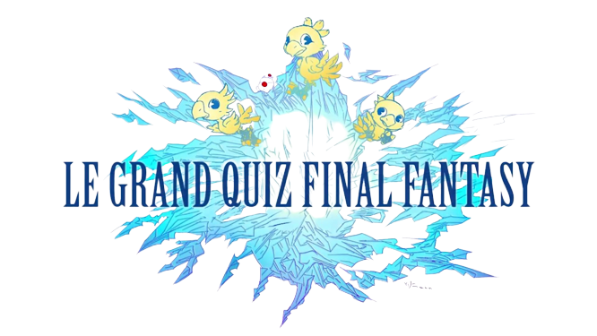
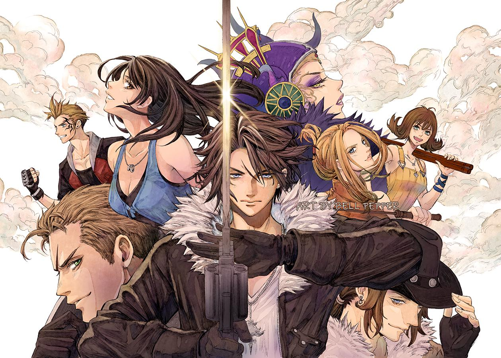
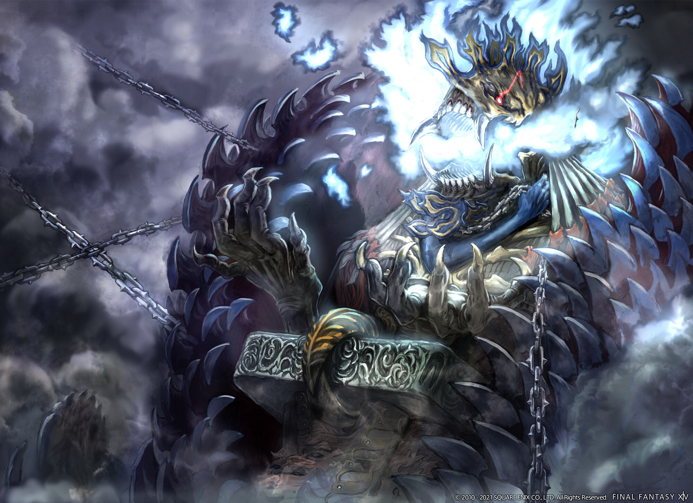

Dans quelle ville se déroule le début de Final Fantasy 9?
A Lindblum
A Dollet
A Alexandria
A Treno

Quelle est la date de sortie de Final Fantasy 8 ?
1999
2000
2001
2002
Quel est le meilleur moyen d'obtenir des portes de l'inconnu ?
Corrompre un Xylomid dabs la Plaine Félicité
En triomphant de Shinryu au CEM
En tuant des mimics dans les ruines d'Oméga
Corrompre un Morbol dans les ruines d'Oméga

Combien d'Hp a la chimère purgatrice Anima ?
4 millions
8 millions
12 millions
24 millions
Quel est le nom de l'Empereur dans Final Fantasy 6 ?
Garland
Gestahl
Mikoto
Mateus
D'où vient Zack ?
De Nibelheim
De Mideel
De Wutai
De Gongaga
Comment s'appelle l'un des monstres d'Ultimécia ?
Anachronox
Chronos
Adel
Bogomil
Pour quelle raison ont été crée les Seed Blanc ?
Pour protéger Edea
Pour protéger Balamb
Pour protéger Cid
Pour protéger Elone
Validez vos choix !
Cliquez sur valider pour voir les résultats